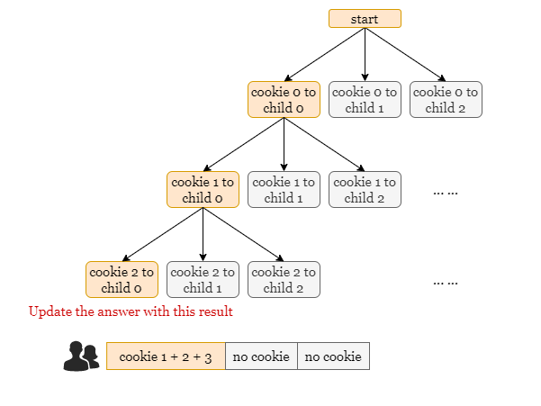
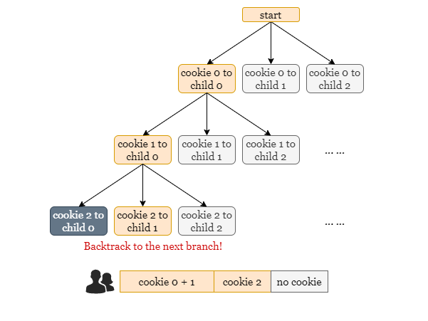
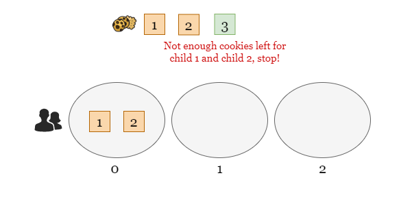
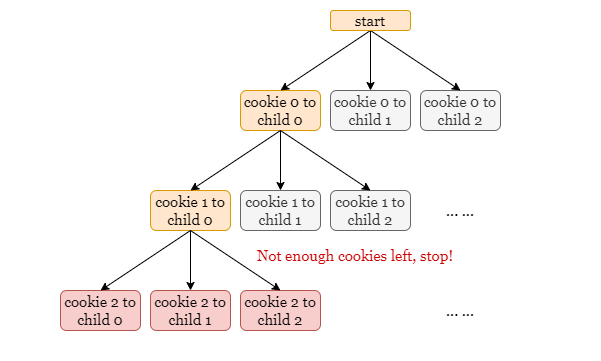

If you are not familiar with recursion, please refer to our explore cards Recursion Explore Card. We will focus on the usage in this article and not the underlying principles or implementation details.
The concept of backtracking involves attempting all possible distributions of cookies. We distribute the current cookie to each child and recursively repeat the process with the next cookie until all the cookies are distributed. Once all the cookies have been distributed, we compute the unfairness of the current distribution and update the minimum unfairness encountered.
Let’s take a look at a scenario with 3 cookies and 3 children that serves as a great example of this.
Initially, we move along the path in yellow by distributing all 3 cookies to child 0, but it is not a valid distribution as child 1 and child 2 receive no cookies.

As a result, we backtrack to the next possible distribution (by distributing the last cookie to child 1) and repeat this process.

After distributing all cookies, we will determine if the current distribution is valid, and if so, we will calculate the unfairness of this distribution.
To optimize the backtracking approach, we can use an early stop technique. Consider the same example in the image below: suppose that we have already distributed the first 2 cookies to child 0. When we come to the last cookie, should we continue the recursion process by distributing it to any child?
The answer is NO, because child 1 and child 2 require at least two cookies, and at this point, we only have one cookie remaining. Consequently, no matter how we distribute this last cookie, it will inevitably lead to an invalid distribution. Therefore, we can discard this path and not proceed further with it.

To implement the early stop technique, we will introduce a parameter named zero_count that represents
the number of children without a cookie. During the backtracking process, if we have fewer
undistributed cookies than zero_count, it means that some children will always end up with no cookie.
At this point, we can terminate the recursion because it becomes impossible to obtain a valid distribution. The
image below illustrates this concept, where the red states are not computed thanks to the early stop, significantly
reducing unnecessary recursion steps.

Therefore, the algorithm only tracks the paths that lead to valid distributions and updates the global minimum by the maximum unfairness of each valid distribution.
Create an array distribute of length k initialized with all zeros, which represents
the unfairness of each child.
Define the recursive function dfs(i, zero_count) to distribute the ithi^{th}
cookie:
zero_count, which is n - i <
zero_count, return a large integer like float('inf'), implying that the current
distribution is invalid.
i = n, return the maximum value of distribute which is the unfairness of
this distribution.
answer as float('inf') and continue with step 3.Iterate through distribute and for each child j:
distribute[j] by cookie[i], if distribute[i] is 0
before the distribution, decrement zero_count by 1.
dfs(i + 1, zero_count) and update answer as the minimum
unfairness encountered, answer = min(answer, dfs(i + 1, zero_count)).
distribute[j] by cookie[i], if distribute[i] is 0 after
the process, increment zero_count by 1. (This is the backtrack step)
Return answer after the iteration is complete.
Return dfs(0, distribute).
Java
class Solution {
private int dfs(int i, int[] distribute, int[] cookies, int k, int zeroCount) {
// If there are not enough cookies remaining, return Integer.MAX_VALUE
// as it leads to an invalid distribution.
if (cookies.length - i < zeroCount) {
return Integer.MAX_VALUE;
}
// After distributing all cookies, return the unfairness of this
// distribution.
if (i == cookies.length) {
int unfairness = Integer.MIN_VALUE;
for (int value : distribute) {
unfairness = Math.max(unfairness, value);
}
return unfairness;
}
// Try to distribute the i-th cookie to each child, and update answer
// as the minimum unfairness in these distributions.
int answer = Integer.MAX_VALUE;
for (int j = 0; j < k; ++j) {
zeroCount -= distribute[j] == 0 ? 1 : 0;
distribute[j] += cookies[i];
// Recursively distribute the next cookie.
answer = Math.min(answer, dfs(i + 1, distribute, cookies, k, zeroCount));
distribute[j] -= cookies[i];
zeroCount += distribute[j] == 0 ? 1 : 0;
}
return answer;
}
public int distributeCookies(int[] cookies, int k) {
int[] distribute = new int[k];
return dfs(0, distribute, cookies, k, k);
}
}
C++
class Solution {
public:
int dfs(int i, vector& distribute, vector& cookies, int k, int zeroCount) {
// If there are not enough cookies remaining, return INT_MAX
// as it leads to an invalid distribution.
if (cookies.size() - i < zeroCount) {
return INT_MAX;
}
// After distributing all cookies, return the unfairness of this
// distribution.
if (i == cookies.size()) {
return *max_element(distribute.begin(), distribute.end());
}
// Try to distribute the i-th cookie to each child, and update answer
// as the minimum unfairness in these distributions.
int answer = INT_MAX;
for (int j = 0; j < k; ++j) {
zeroCount -= distribute[j] == 0 ? 1 : 0;
distribute[j] += cookies[i];
// Recursively distribute the next cookie.
answer = min(answer, dfs(i + 1, distribute, cookies, k, zeroCount));
distribute[j] -= cookies[i];
zeroCount += distribute[j] == 0 ? 1 : 0;
}
return answer;
}
int distributeCookies(vector& cookies, int k) {
vector distribute(k, 0);
return dfs(0, distribute, cookies, k, k);
}
};
Python3
class Solution:
def distributeCookies(self, cookies: List[int], k: int) -> int:
cur = [0] * k
n = len(cookies)
def dfs(i, zero_count):
# If there are not enough cookies remaining, return `float('inf')`
# as it leads to an invalid distribution.
if n - i < zero_count:
return float('inf')
# After distributing all cookies, return the unfairness of this
# distribution.
if i == n:
return max(cur)
# Try to distribute the i-th cookie to each child, and update answer
# as the minimum unfairness in these distributions.
answer = float('inf')
for j in range(k):
zero_count -= int(cur[j] == 0)
cur[j] += cookies[i]
# Recursively distribute the next cookie.
answer = min(answer, dfs(i + 1, zero_count))
cur[j] -= cookies[i]
zero_count += int(cur[j] == 0)
return answer
return dfs(0, k)
Let nn
be the length of cookies.
Time complexity: O(kn)O(k^n)
Space complexity: O(k+n)O(k + n)
distribute represents the status of kk
children, thus taking up O(k)O(k) space.
i by 1. Therefore, at most nn
levels of recursion will be created, and each level consumes a constant amount of space.